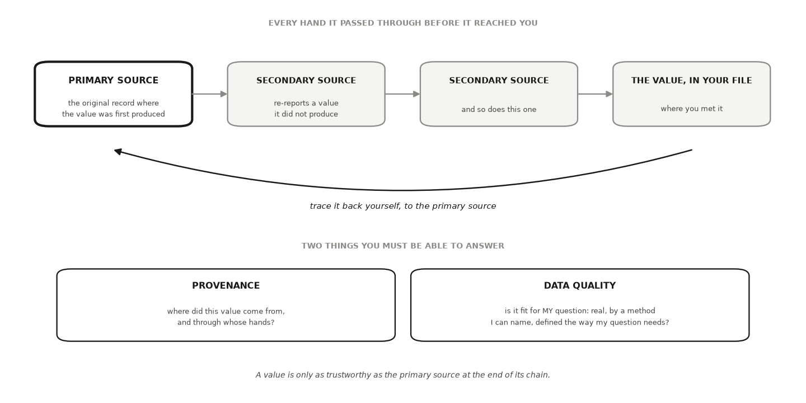

HONR 46400 · Evidence-Driven Research
Studio 6 — Govern data and measurement
What you can defend when you leave
Studio 6
Establish where your numbers came from and whether they measure what you say they measure.
The milestone ahead
Studio 6
This studio closes with Milestone 6: Your data and measurement, governed, a short chapter of its own after the lessons. What it asks you to produce. Provenance documentation, a data-management record, your measurement specification, and a route-specific permission recheck.
The lessons in this studio
Studio 6 · Road map
- Lesson 20 — Data Provenance and Data Quality: your acquisition route, written and dated, your provenance record for every dataset and borrowed number (the primary source behind your headline claim opened and read), your data-management update, and the permission recheck against the data as they actually arrived.
- Lesson 21 — Measurement and Operationalization: your measurement specification: concept, construct, indicator, the meaning sentence for each number, the reliability check’s result, the indicator-to-use validity argument with its strongest rival reading, and the boundary that follows.
Data Provenance and Data Quality
Lesson 1 of this studio · Chapter 20
whether a number you did not produce yourself is solid enough to carry your project’s weight
The research decision
Chapter 20
For every number, dataset, and source your project leans on, decide whether it is solid enough to build on. You make that call twice: once on where the value came from and whose hands it passed through, its provenance, and once on whether it was produced well enough, under the right definition, for the specific use you have in mind, its quality.
The words this chapter uses
Chapter 20 · Key terms
Data provenance
the documented origin of a value and every hand it passed through before it reached you (Lebo et al. 2013) (Wilkinson et al. 2016).
Data quality
whether a value is fit for your specific use: real, produced by a method you can name, and defined the way your question needs (Wang & Strong 1996).
Your advisor asks where the 72 percent came from
Chapter 20 · Why this decision matters
- You wrote that turnout in this county was 72 percent.
- The question is not which website you copied it off.
- Bring the office that certified the count, or take the number out.
Who counted the ballots, and 72 percent of what? Of registered voters, of adults, of adults actually eligible to vote?
Precision is not the same as trust
Chapter 20 · Why this decision matters
- A value with no traceable origin is a rumor with a decimal point.
- A number does not become true by arriving looking tidy.
- Ask two questions of everything you borrow.
- Where did it come from, and is it any good for what I need it for?
A turnout figure traces back to the office that certified the count
Chapter 20 · The concept
- The news story reports the figure.
- A state summary table re-reports it.
- The county election office certified the count that produced it.
- A value is only as trustworthy as the primary source at the end of its chain.
One link produced the value. The rest copied it.
Chapter 20 · The concept
Primary source
the original record where a value was first produced, such as the county’s certified canvass reporting the final vote totals
Secondary source
a source that re-reports a value it did not produce, such as a newspaper table, an encyclopedia entry, or a data aggregator
Every value arrives at the end of a chain someone else wrote
Chapter 20 · The concept
- Only the primary source produced the value. Every later link copied it.
- Tracing back to it is your job, not the tool’s.
- Provenance asks where it came from; quality asks whether it fits your question.

The same real number can be right for one question and wrong for yours
Chapter 20 · The concept
- Turnout over registered voters answers whether registered people showed up.
- It is the wrong number for how much of the adult population takes part.
- Quality is fitness for your use: real, method you can name, definition your question needs.
- A mischaracterized value is a real number attached to the wrong definition or method.
A file with no answers to those questions is not yet data
Chapter 20 · The concept
- Whole datasets carry the same two questions, column by column.
- Who produced this variable, and who cleaned it?
- What did they drop?
- Does the definition behind the column match the one in your question?
A citation you have not opened is a lead, not a source
Chapter 20 · The concept
One habit settles both questions: the retrieval-verification loop.
- Ask a tool to surface a value and its source.
- Retrieve the primary source yourself.
- Verify that it exists and reports that value under that definition.
- Document where you found it.
A source that looks entirely real is where the loop starts
Chapter 20 · A worked example
- You are studying whether a local election reform changed participation.
- You need one number for your background section: county turnout in a recent presidential election.
- The assistant answers in about a second: seventy-two percent, with a source that looks entirely real.
- You run the loop instead of copying the number.
Provenance: search the exact title, then walk one link back
Chapter 20 · A worked example
- If the source resolves nowhere, the value is orphaned and you drop it.
- If the page is real, ask whether it produced the number or republished it.
- That question usually sends you back to the state’s official results summary.
- Behind that sits the county clerk’s certified canvass, where the totals were settled.
Three denominators, three turnout numbers, one election
Chapter 20 · A worked example
- Open the canvass and read what the percentage is of.
- Registered voters, all adults, or adults eligible to vote?
- Eligible excludes noncitizens and, in some states, people with certain felony convictions.
- The gaps between those three are not small.
When two documented sources disagree, the disagreement is the finding
Chapter 20 · A worked example
- Cross-check against an independent source that documents its own methods.
- The United States Elections Project publishes voting-eligible-population turnout estimates and explains its denominator.
- The Census Bureau’s Current Population Survey Voting and Registration Supplement reports self-reported turnout.
- Report both, name the definition behind each, and say which one your question needs and why.
One numerator, three denominators, and the spread the label decides
Chapter 20 · A worked example
- Nothing is randomly drawn here. Provenance is a chain, not a sample.
- Watch the spread in percentage points across the three published figures.
- Replace the placeholders with numbers you retrieve from the canvass and a named census table.
import pandas as pd
SEED = 464 # no random draw here: provenance is a chain, not a sample
# One county, one election, three denominators — each a real kind of published
# figure, each answering a different question. Replace these with the numbers
# you retrieve from the canvass and the census table you name.
ballots_cast = 214_318
denominators = {
"registered voters (clerk's canvass)": 297_664,
"voting-age population (census estimate)": 341_902,
"voting-eligible population (estimate)": 312_540,
}
rows = [{"denominator": k, "count": v,
"turnout %": round(ballots_cast / v * 100, 1)}
for k, v in denominators.items()]
print(pd.DataFrame(rows).to_string(index=False))
print(f"\nspread across the three : "
f"{max(r['turnout %'] for r in rows) - min(r['turnout %'] for r in rows):.1f} "
f"percentage points")
print("one election, one numerator, three published turnout numbers.")
print("a figure with no stated denominator is not yet evidence")An AI failure case
Chapter 20
Where the tool failed
You ask for county turnout and the tool returns “72 percent,” with a citation to a real state elections page. Seven details look right, so it is tempting to paste it straight in. You open the page instead, and the table header reads percent of registered voters, not percent of everyone eligible. The number is real. The denominator is the wrong one for your question, and the tool swapped it silently. You catch it two ways. You had written your own expectation first, so a figure that sits well above what you knew about participation in that county already looked suspect. Then you read the actual column header rather than the tool’s summary of it, and the mismatch is plain. The value goes into your notes as a registered-voter rate, and your original question stays open.
Do not delegate
Chapter 20
This stays yours
Three calls stay yours. Whether a value counts as verified is settled by a source you opened, not by the tool’s confidence. Whether its definition fits your use is a judgment about your specific question, and no lookup makes it for you. And how much uncertainty you report when your sources disagree is yours to state and defend, because your name goes on the claim the number supports.
It is your turn
Chapter 20 · Your move
- List every dataset, table, and borrowed number your project uses.
- For each, write four things: who produced it, when, from what original record, and every hand it passed through on the way to you.
- Open the primary source behind the entry your headline claim leans on hardest.
- Beside each entry, write its definition in your own words and mark whether it matches the definition your question needs.
- Save the record as a file that travels with your project, and note the date you retrieved each source.
- Close with the studio’s governance trio: write and date your acquisition route, update where the data live and who can open them, and recheck the permission status against the data as they actually arrived.
- Log the step in your AI Research Ledger, and verify at least one entry with a named method from the Verification Guide.
Work it in the companion notebook with Chapter 20 open beside it. Log every delegation in your AI Research Ledger.
Measurement and Operationalization
Lesson 2 of this studio · Chapter 21
which specific number you will let stand in for the big idea your question is about
The research decision
Chapter 21
Decide how to turn the abstract idea your question is about into one concrete number you can record, repeat, and defend. Name the concept, name the narrower construct that will stand in for it, name the indicator you will actually measure, and then say plainly what that indicator captures and what it quietly leaves out.
The words this chapter uses
Chapter 21 · Key terms
Operationalization
the act of turning an abstract idea into a specific, repeatable measurement procedure.
Measurement validity
asks whether accumulated evidence supports the specific meaning you attach to your number, for the specific use you have in mind (American Educational Research Association et al. 2014).
Measurement reliability
asks whether your number holds still when you repeat the measurement, and it means nothing until you say what repeats.
“Engaged” is a word. Which number did you record?
Chapter 21 · Why this decision matters
- A people-analytics lead, reading the first draft of a workplace study.
- The decision on the table: which specific number stands in for the big idea.
Before you tell me the pilot made people more engaged, tell me exactly what you put a number on. ‘Engaged’ is a word. I need to know which question you asked, on what scale, and what that number quietly ignores.
Your finding is only as trustworthy as the swap
Chapter 21 · Why this decision matters
- Every result answers a question about some idea: engagement, market power, wellbeing, participation.
- You never measure the idea. You measure a number that stands in for it.
- That substitution is the swap, and it is where trust is won or lost.
- So say which number you recorded and what it quietly leaves out.
“Employee engagement” becomes the mean of one 1 to 7 item
Chapter 21 · The concept
Employee engagement, then willingness to recommend the workplace, then the mean of one item.
Concept
the abstract idea your question is really about; rich, fuzzy, and not measurable directly
Construct
the one specific, named facet of the concept you decide to measure
Indicator
the exact number a procedure produces
Validity belongs to a claim, not to the instrument
Chapter 21 · The concept
- Ask whether accumulated evidence supports the meaning you attach to your number (American Educational Research Association et al. 2014).
- And for the specific use you have in mind, not for any use at all.
- May well support: people who answered expressed more willingness to recommend this workplace.
- Does not by itself support: employees here are more engaged.
- Change the reading or the use, and you need evidence again.
Reliability means nothing until you say what repeats
Chapter 21 · The concept
- Repeat the occasion: re-ask the same people two weeks later.
- Repeat the rater: have two trained coders score the same speeches.
- Repeat the items: split a many-question scale for one construct into comparable halves.
- For a fast-moving mood, a different answer is news, not error.
Split-half compares two halves of your items, on the same people
Chapter 21 · The concept
- A twelve-item scale gives each employee an odd-item score and an even-item score.
- Check that a person scoring high on one scores high on the other.
- The halves have to be comparable, not odd-and-even by accident of order.
- Each half is only half as long, so raw agreement understates the full scale.
You split items, never people
Chapter 21 · The concept
- You could compare the average of one half of your respondents against the other.
- That tells you how much a group average wobbles between samples of people.
- It is a real thing to know, and an entirely different question.
- It says nothing about whether your instrument reads consistently.
A bathroom scale is reliable and still a poor stand-in for fitness
Chapter 21 · The concept
- The scale reads your weight the same way five times in a row.
- Weight is still a poor stand-in for “fitness” (Cronbach & Meehl 1955).
- Reliability feeds validity without settling it.
- An indicator can be perfectly reliable and still support the wrong claim.
Sixteen sites, and one question about the flexible-scheduling pilot
Chapter 21 · A worked example
- Are the sites that ran the pilot more engaged than the sites that kept fixed shifts?
- Concept: employee engagement. No instrument reads “engagement.”
- Construct: willingness to recommend the workplace.
- Indicator: mean of one 1 to 7 agreement item, at eight pilot and eight comparison sites.
Check reliability first, then name what the item ignores
Chapter 21 · A worked example
- Re-ask a random tenth two weeks later and compare their two answers.
- They land close, so the item is repeatable rather than a coin flip dressed as data.
- It says nothing about burnout, about whether pay feels fair, or about work that matters.
- It cannot hear from the people who already quit.
- Naming omissions begins the validity argument. It does not finish it.
The number is real, and its meaning stops where the construct stops
Chapter 21 · A worked example
- Defensible: pilot sites averaged higher willingness to recommend than comparison sites.
- With the boundary attached: one facet of engagement, measured with a repeatable single item.
- Not defensible: “the pilot made employees more engaged.”
- You never measured the facets your indicator skips, and never heard from the people who left.
Watch what the reliability number does not license
Chapter 21 · A worked example
- The block builds the sixteen sites, reads the indicator, and runs the retest.
- The retest re-asks the same people the same item, never a second group of people.
- The printed correlation says the item is repeatable, and stops there.
import numpy as np, pandas as pd
SEED = 464
rng = np.random.default_rng(SEED)
n_per_site, sites = 60, 16
pilot = np.repeat([True] * 8 + [False] * 8, n_per_site)
site = np.repeat(np.arange(sites), n_per_site)
# The construct is willingness to recommend; the indicator is one 1-7 item.
site_effect = rng.normal(0, 0.25, size=sites)
person = (4.3 + 0.35 * pilot + site_effect[site]
+ rng.normal(0, 1.2, size=len(site))) # people differ, stably
item = np.clip(np.round(person + rng.normal(0, 0.5, size=len(person))), 1, 7)
# Reliability: re-ask a random tenth two weeks later. Same PEOPLE, same item.
retest_idx = rng.choice(len(item), size=len(item) // 10, replace=False)
retest = np.clip(np.round(person[retest_idx]
+ rng.normal(0, 0.5, size=len(retest_idx))), 1, 7)
r = np.corrcoef(item[retest_idx], retest)[0, 1]
print(pd.DataFrame({"pilot site": pilot, "item": item})
.groupby("pilot site")["item"].agg(["size", "mean"]).round(2).to_string())
print(f"\ntest-retest correlation on the re-asked tenth : {r:.2f}")
print("that number says the item is repeatable. it says NOTHING about whether")
print("recommend-a-friend captures engagement, or about the people who quit")An AI failure case
Chapter 21
Where the tool failed
You ask, “operationalize employee engagement for my pilot study,” and the tool answers with total confidence: “Ask whether people would recommend the company on a 0 to 10 scale and take the share who answer 9 or 10. That is engagement.” The recipe is clean, correct-sounding, and easy to field. Here is the trap. Engagement is a broad concept with several independent facets, and the tool silently narrowed it to one construct, then handed you the indicator as if it were the whole idea. This is a scope change wearing the costume of a complete answer.
How it failed
Chapter 21 · An AI failure case
- You catch it by reading the answer’s claim next to your question, word for word.
- Your question was about “engagement”; the answer is about “would recommend,” and those are not the same box.
- Then you confirm it with a real source: open a published engagement framework and find the several facets the recipe never mentioned.
- A confident recipe is not a valid operationalization.
- You verify the construct, not the fluency of the paragraph that proposed it.
Do not delegate
Chapter 21
This stays yours
Which concept your question is about, which construct honestly stands for it, and where your indicator’s meaning must stop are yours alone. The tool can list instruments and name limitations, but only you decide that a recommend-a-friend rating is a fair stand-in for the facet of engagement you actually care about, and only you write the sentence that refuses to call one facet the whole concept. Naming what your number leaves out is the researcher’s job, not the model’s.
It is your turn
Chapter 21 · Your move
- List every concept your question contains and circle the abstract ones, the words no instrument reads: engagement, health, participation, quality, competitiveness.
- Under each circled concept write the construct you will really measure, plus one line on why that facet and not a neighboring one.
- Under each construct write the indicator: the exact procedure and the exact number it produces, specific enough that a stranger could repeat it and get a comparable value.
- Under each indicator finish this sentence in your own words: “this number does not capture ___.” Use the facet that worries you most, and add who your measurement never reaches.
- Write one sentence saying what your number means and one saying what you will do with it.
- Plan one reliability check that matches an error source you actually worry about, then run it: the same units measured twice (occasions), two coders on the same material (raters), or two halves of your items scored for the same people (split-half).
- Log the step in your AI Research Ledger, and verify at least one measure with a named method from the Verification Guide.
Work it in the companion notebook with Chapter 21 open beside it. Log every delegation in your AI Research Ledger.
Milestone 6: Your data and measurement, governed
Studio 6 closes here
What the lessons handed you becomes one artifact you can defend.
What this milestone produces
Milestone 6
The artifact
What this milestone produces. Provenance documentation, a data-management record, your measurement specification, and a route-specific permission recheck.
What you bring
Milestone 6 · Check before you start
- Lesson 20 — Data Provenance and Data Quality: your acquisition route, written and dated, your provenance record for every dataset and borrowed number (the primary source behind your headline claim opened and read), your data-management update, and the permission recheck against the data as they actually arrived.
- Lesson 21 — Measurement and Operationalization: your measurement specification: concept, construct, indicator, the meaning sentence for each number, the reliability check’s result, the indicator-to-use validity argument with its strongest rival reading, and the boundary that follows.
The practice
Milestone 6 · In the studio
- Settle your acquisition route first, using the guidance on the studio opener, and write down which route you took and why.
- Document provenance for every source: who produced it, how, when, and under what terms.
- Write your measurement specification: the construct, the operationalization, and the gap between them.
- Assess reliability and validity for your own instrument, on the evidence you actually have.
- Recheck permissions against the data as they actually arrived, not as planned.
The four rails, here
Milestone 6 · Every studio, these four
Ethics, permissions, and data exposure
Data that arrived differently from the plan can carry permissions the plan did not cover.
Evidence, provenance, and reproducibility
Provenance is the evidence rail applied to your own data.
AI activity, verification, and human decisions
An assistant can describe a dataset it has never seen; verify every claim against the file.
Uncertainty, claim boundary, and revision history
Measurement error is uncertainty; state it alongside sampling uncertainty, not instead of it.
A version, not a pass
Milestone 6
How the record works
Your milestone artifact is a dated, numbered version with the reason for the version attached. When later evidence changes it, you write the next version rather than editing the last one, because the sequence of changes is itself part of your research record.
The one rule
AI is your arm and your research assistant, not your brain.
AI can review AI, and a second model is a real auditor of the first. The last decision is always human.

EDR|AI · Studio 6 — Govern data and measurement